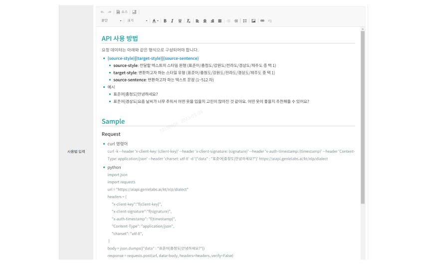
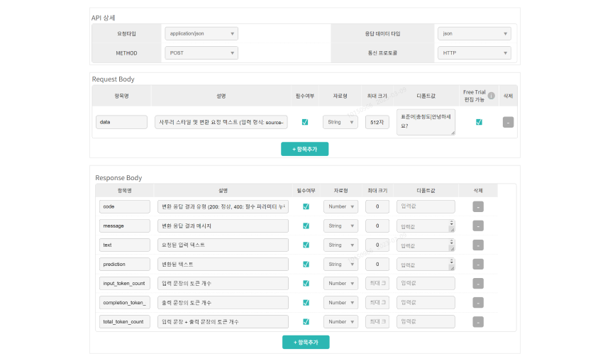

GenieLabs Documentation
GenieLabs Documentation은 개발자들이
GenieLabs
플랫폼을
통해 보다 쉽게 API를
활용할 수 있도록 안내하고
있습니다.
Introduction
Guide For Developers
- Overview
- 본 가이드는 GenieLabs AI API 개발자들을 위한 공통 가이드를 제공합니다.
- 사전 준비사항
- GenieLabs AI API 사용 및 등록을 위해 먼저 GenieLabs에 가입 및 API 신청이 필요합니다.
- AI API 신청 및 등록 방법은 아래 가이드를 확인해주세요.
Quickstart
API Reference
Guide For Providers
- GenieLabs 사용자라면 누구나 AI API Provider가 될 수 있습니다.
- 배포 프로세스는 아래를 참고해 주세요 (문의: genielabs@kt.com)
01
API 개발
02
API 등록
03
API 엔진구축
및 G/W 연동
04
API 명세 작성
05
API 배포
1. API 개발
등록 신청 전에 AI API 개발 가이드를 참고해 주세요.
2. API 등록
- (1) GenieLabs 회원가입 및 로그인 후 API 등록 버튼을 클릭합니다.
-
(2) API 등록 신청 페이지를 작성 후 등록 신청합니다.
- 이용 범위와 상관 없이 API 리스트는 노출되며, 범위에 따라 상세조회, API 사용 신청 권한이 설정됨
-
API 요약에는 API 페이지 카드에 노출 될 한 문장 작성 (ex. ~기능, ~기술, ~제공 과 같은 형식으로 작성) -
API 소개에는 서비스 개요, 특징, 활용 사례 등을 구체적으로 서술 - API Serving 환경이 별도로 구축되어 있는 경우, Dedi로 표기 후 기타 요청사항에 연동 필요한 API 서버 정보 기입
- API Serving 환경 구축이 필요한 경우, Dedi 또는 Kubernetes 환경 신청
- Kubernetes 배포 권장
- 회사 로고는 KT가 아닌 경우만 등록
- (3) 관리자가 검토 후 API 구축을 위해 다음 단계를 안내드립니다.
3. API 엔진구축 및 G/W 연동
-
(1) GenieLabs
Kubernetes또는Dedi서버에 API 구축이 완료되면, 아래 정보를 관리자 에게 제출합니다.- API 엔진을 호출할 Endpoint 서버 IP, 포트 또는 URL
API Name Dedi/K8S IP(URL) Port Path curl 명령어 샘플 데이터 비고 Serving 방식 택1 -
API 자체 테스트 결과 전달
- 성공, 실패, 예외 등 다양한 케이스에 대한 테스트 진행 결과 전달 (응답코드, 메시지 포함)
- API 엔진을 호출할 Endpoint 서버 IP, 포트 또는 URL
- (2) G/W 연동이 완료되면 최종 호출 테스트를 진행합니다.
- (3) 호출 테스트까지 완료되면, API 명세 작성 단계를 진행합니다.
4. API 명세 작성
-
(1) 구축이 완료된 API에 대해 상세 명세를 작성합니다.
API 식별자/Base URL
- 아래 API 식별자 표기법을 참고하여 API 식별자 및 BaseURL을 작성합니다.
- 식별자가 잘못 작성될 경우 API 사용 불가능하니 유의 부탁 드립니다.
Tutorial -
API 사용 방법
- API 사용 방법을 단계별로 작성합니다. 필요한 경우, 파라미터에 대한 설명을 추가하고 예시를 작성합니다.
-
Sample
- Request에 대한 curl, python 샘플 두 종과 함께 Response 샘플을 작성합니다.
API 상세 - API 규격에 맞는 요청타입, METHOD, 응답데이터타입, 통신 프로토콜을 선택합니다.
- Request Header는 API 인증 방법에 따른 기본 고정 값을 사용합니다.
-
Request, Response Body 부분에 각 파라미터에 대한 자세한
설명 및 필수여부, 자료형, 디폴트 값 등을 규격에 맞게
작성합니다.
- 각 파라미터 값의 범위 작성 필수
- 적절한 예시를 보여줄 수 있는 데이터를 디폴트 값에 입력 (Free Trial 미리보기 테스트)
- 외부 URL의 소개글만 제공하고자 하는 경우에는 API 외부 URL로 이동하는 기능을 사용합니다.
- (2) 명세 등록 시, 관리자가 확인 후 승인 또는 반려합니다
5. API 배포완료
명세 작성이 승인된 API는 API 배포 로 표시되며,
API 페이지에 해당 API가 노출됩니다.
이후 Developer Console > API Provider > API 등록현황에서 자유롭게
명세서 수정이 가능하며, 배포한 API에 대해 수정이 필요한 경우
업데이트 신청 접수 부탁 드립니다.
(참고) GenieLabs REST API Endpoint Naming Convention
규칙
-
(1) API을 호출하기 위한
url의 path와 GenieLabs에서 사용하는API 식별자는 “회사명”, “카테고리”, “api이름” 등의 3가지 값으로 구성- 2-depth 이상의 카테고리가 필요할 경우, ‘-’를 이용하여 표현. ex: vision 내 digital-health → vision-digital-health
- (2) “회사명”, “카테고리”, “api이름” 각각은 50글자를 넘을 수 없음
- (3) “회사명”, “카테고리”, “api이름” 각각은 소문자, 숫자, ‘-’ 만 사용하여 표기
-
(4)
API 식별자는{회사명}_{카테고리}_{api이름}으로 구성 -
(5)
url의 path는{회사명}/{카테고리}/{api이름}으로 구성 -
(6) KT API인 경우, 아래 카테고리 중 하나를 선택
voice nlp vision industry network miscellaneous
-
(7) 그 외 API인 경우, 임의로 정의 가능하나 아래 카테고리 중
선택하는 것을 권장함
ktvoice, nlp, vision, industry, network-
paper with codemedical, methodology, time series, graphs, playing games, audio, computer code, adversarial, reasoning, music, miscellaneous -
rapid apidata, sports, finance, travel, entertainment, location, science, food, transportation, business, tools, text analysis, weather, gaming, sms, events, health and fitness, payments, financial, translation, storage, logistics, database, search, reward, mapping, machine learning, email, news, media, video, images, ecommerce, devices, business software, advertising, education, media, social, commerce, communication, monitoring, energy, movies, other
예시
-
1.
url: kt/vision/face-detection-and-recognition →API 식별자: kt_vision_face-detection-and-recognition -
2.
url: kt/voice/genie-voice →API 식별자: kt_voice_genie-voice -
3.
url: kt/vision-digital-health/thyroid-cancer-diagnosis-assistant →API 식별자: kt_vision-digital-health_thyroid-cancer-diagnosis-assistant
AI API 개발 가이드
- 아래 유의사항을 참고하여 GenieLabs API 개발 및 규격서를 준비합니다.
- URL Rules: GenieLabs REST API Endpoint Naming Convention
-
G/W의 연동을 위해
http Restful형태로 처리- 지원 예시: URL/URI에 식별 값(id 등) 활용 가능
-
미지원 예시: http GET 전송 방식으로 데이터를 담아 POST로
전송 불가 (ex.
http://localhost/example?user=id&arrList=%EB%AF...) -
연동 요청형식은
Content-Type application/json권장 - TCP 소켓을 활용한 별도 처리 필요 시 협의 필요
-
Request/Response파라미터 규격 Tips- mandatory, optional 구분 필수
-
내용에 맞는 자료형 사용 (ex. 문자열은
String, 숫자는NumberType 사용)- 문자열 인코딩은
UTF-8사용
- 문자열 인코딩은
- 성공, 실패, 예외 등 다양한 케이스에 대한 응답코드 정상 동작하는지 확인
- G/W와 연동검토(혹은 연동개발) 중 응답결과 및 JSON 응답 파라미터 임의 수정 지양
-
엔진 상태 코드 및 메시지 Response에 추가
Name Type Description codeInt에러인 경우 HTTP 상태 코드와 구분을 위해 음수 값으로 전달 messageString에러인 경우 에러 내용 전달 Status Code Code Description 400 5000 HTTP Request Method(GET, POST) 오류 400 5001 요청 파라미터 설정 오류 400 5002 Request Body 포맷 오류 - PARSE_ERR / READ_ERR 401 5003 인증 실패 429 5004 일 호출 건 수 초과 500 5005 Request Body data read 에러 500 5006 http.Request() 에러 500 5007 엔진 타임아웃 등 500 5008 Response Body data read 에러 등 500 50xx ... -
API 미터링 정보 Response에 추가
-
NLP API
Name Type Description total_token_countInt(선택)미터링을 위해 사용할 token count 값을 전달 예) 입/출력 데이터 토큰 개수의 합
-
NLP API
Kubernetes 배포 가이드
1. Kubernetes 상에서 API 컨테이너가 실행되도록 이미지 재빌드
FROM 이미지명:태그명 WOKRDIR /home/workdir EXPOSE 80 CMD "python", "-m", "api"
ex. 80 포트를 사용하는 API Dockerfile 예시
2. 재 빌드된 이미지로 컨테이너가 정상 구동되는지 테스트
-
priviledged, unsafesysctl옵션 지양
3. GenieLabs 도커 레지스트리에 이미지 push
sudo docker login HARBOR_ADDRESS # sudo docker commit CONTAINER SOURCE_IMAGE:TAG sudo docker tag SOURCE_IMAGE:TAG HARBOR_ADDRESS/PROJECT_NAME/IMAGE:TAG sudo docker push HARBOR_ADDRESS/PROJECT_NAME/IMAGE:TAG
-
Harbor정보 담당자에게 문의 (genielabs@kt.com)- Harbor push할 서버 공인IP 정보 함께 전달 참고
-
이미지 push 후 아래 정보 담당자에게 공유
- 도커 이미지명/태그명/API 사용 포트 (path)
- 도커 컨테이너 실행시 필요한 옵션 (docker run 명령어)
- 도커 컨테이너 정상동작 확인 방법 (명령어, 스크립트 등)
- 폴더 마운트 필요 시, 필요한 용량 및 디렉토리 위치를 함께 전달
- 기타 옵션 필요 시, 별도 협의